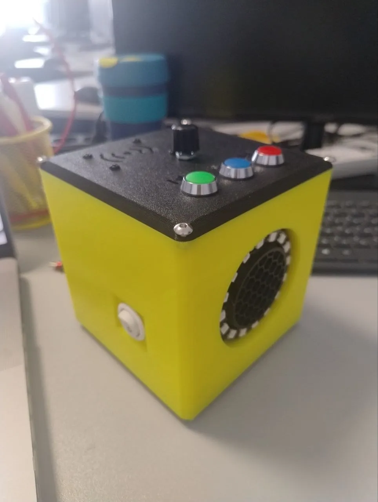

AdaBox — DIY Toddler Music Player on ESP32 with RFID
When our daughter turned one, my wife started looking into kid-friendly music players for her. Commercial products like Toniebox are widely popular, but come with significant drawbacks:
- Walled garden ecosystem: every single album or fairy tale requires buying a proprietary $15–$20 figurine.
- Cloud dependence: activation, sync, and downloads rely entirely on company servers.
- Content limitations: Ukrainian fairy tales, lullabies, or local audio collections are practically nonexistent in their official catalogs.
Researching DIY alternatives, I came across the German Tonuino and ESPuino projects. Both are great concepts, but I decided to make my own build: using slightly different, readily available components from local suppliers and assembling everything directly without custom printed circuit boards (PCBs). On the software side, with modern AI coding tools, writing lean custom firmware from scratch for my exact pinout and logic felt significantly simpler and faster than forking and wrestling with someone else’s complex codebase.
The core principle remains simple and magical for a toddler: tap an RFID card on the top plate — the bedtime story or song immediately starts playing. No screens, no mobile apps, no cloud lock-in.
- Firmware Code: github.com/rrader/adabox (or Jukebox repository)
- 3D Enclosure Model: Printables: AdaBox (Model 1829062)
- Assembly Video: YouTube: AdaBox Build Log

1. Hardware Architecture & Component Selection
The overarching design goal was complete autonomy, simplicity, and child safety.
| Subsystem | Part | Role |
|---|---|---|
| Microcontroller | ESP32-WROOM-32D | Core logic, RFID handling, hardware UART to player, WS2812B LED animations |
| Audio Module | DY-SV5W (SV5W) | Dedicated hardware MP3/WAV decoding from MicroSD, built-in 5W Class-D amplifier |
| Speaker | 4Ω, 5W | Clear, loud enough audio for a kid’s room |
| RFID Reader | RC522 (13.56 MHz SPI) | Reads contactless Mifare Classic cards/keyfobs |
| Visual Feedback | WS2812B 16-LED Ring | Status indication, volume visualization, interactive programming feedback |
| Controls | KY-040 Encoder + 3 buttons | Big rotary volume knob + Play/Pause, Next, Prev buttons |
| Power Management | 2×18650 UPS Module (Type-C) | Wireless battery operation + seamless safe charging via standard USB-C |
ESP32 Pin Mapping
All pushbuttons are wired directly from GPIO to GND, leveraging the ESP32 internal INPUT_PULLUP:
- DY-SV5W UART: RXD →
GPIO 17, TXD →GPIO 16, BUSY →GPIO 15 - WS2812B Ring Data:
GPIO 4 - Buttons: Play/Stop →
GPIO 12, Next →GPIO 13, Prev →GPIO 14 - KY-040 Encoder: CLK →
GPIO 18, DT →GPIO 19 - RC522 SPI: SCK →
GPIO 25, MISO →GPIO 26, MOSI →GPIO 27, SDA(SS) →GPIO 5, RST →GPIO 22
2. Card Architecture & File System Design
Most DIY audio projects store an internal index or lookup table matching Card UID to Track Number. If you swap SD cards, modify folders, or add new songs, card associations frequently break.
In AdaBox, the RFID card stores the full file path directly within its internal EEPROM memory blocks (e.g. /MUSIC/00003.mp3).
The SD card is formatted as FAT32 (MBR) with a clean directory layout:
/MUSIC/
00001.mp3 ← regular music: auto-advances to the next song when done
00002.mp3
/OTHER/
00001.mp3 ← stories/podcasts: plays single selection and stops
00002.mp3
Programming Cards on the Fly (Zero Computer Needed)
- Use Next/Prev buttons to navigate to whatever track you want to assign.
- Hold Next + Prev together and tap a blank RFID card to the top plate.
- The ESP32 writes the active file path to the open Mifare data sectors.
- The LED ring flashes solid green — card programmed and ready!
Child-proofing is also built-in: switching root browse folders (MUSIC ↔ OTHER) requires holding the Next button for 5 continuous seconds during playback pause.
3. WS2812B LED Ring Interaction Design
For a toddler, clear visual feedback transforms a gadget into a toy with personality:
- Idle: gentle breathing blue glow.
- Playing: rainbow spinner smoothly rotating around the ring.
- Play / Stop: immediate green or red burst.
- Track navigation: cyan comet sweep clockwise for Next, yellow counter-clockwise for Prev.
- Volume adjustment: color-coded arc filling from soft green up to bright red at maximum volume.
4. 3D Printing & Physical Ergonomics
The physical shell was adapted from the BioBox 3D model, reworked for standard off-the-shelf hardware:
- Magnetic card retention: small neodymium magnets are embedded flush into the top panel beneath the card cradle. Cards equipped with a small washer or coin snap securely into position and won’t dislodge when carried around.
- Impact durability: printed in PETG with 25% infill and 4 perimeters to withstand accidental drops.
- Child-friendly ergonomics: rounded chamfers on all corners, recessed buttons, and grippy rubber feet (10×5 mm) on the base.
- Brass threaded inserts: all screw mounts use heat-set M3 brass inserts melted into the plastic rather than tapping self-tapping screws. The enclosure can be opened and serviced indefinitely.
Assembly Video
Watch the full physical assembly, internal wiring, and hardware testing:
5. Experience & V2 Roadmap
The player has been in daily use for several months. My daughter grasped the card interaction in minutes, recognizing songs by pictures glued onto the cards and turning the big rotary knob independently.
Planned upgrades for Version 2:
- Exposed dual-purpose USB port: route ESP32 data lines alongside power to the chassis so firmware can be flashed without opening the case.
- I2S DAC migration (MAX98357A): replace the serial DY-SV5W module with a direct I2S DAC, allowing the ESP32 to stream audio, perform soft crossfades, and provide an over-the-air web management UI.